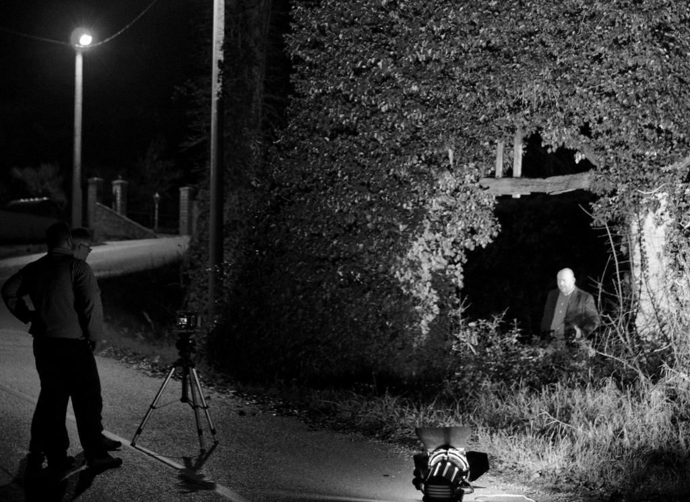
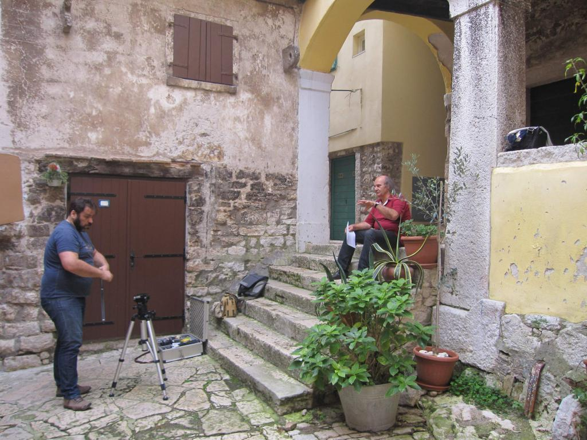
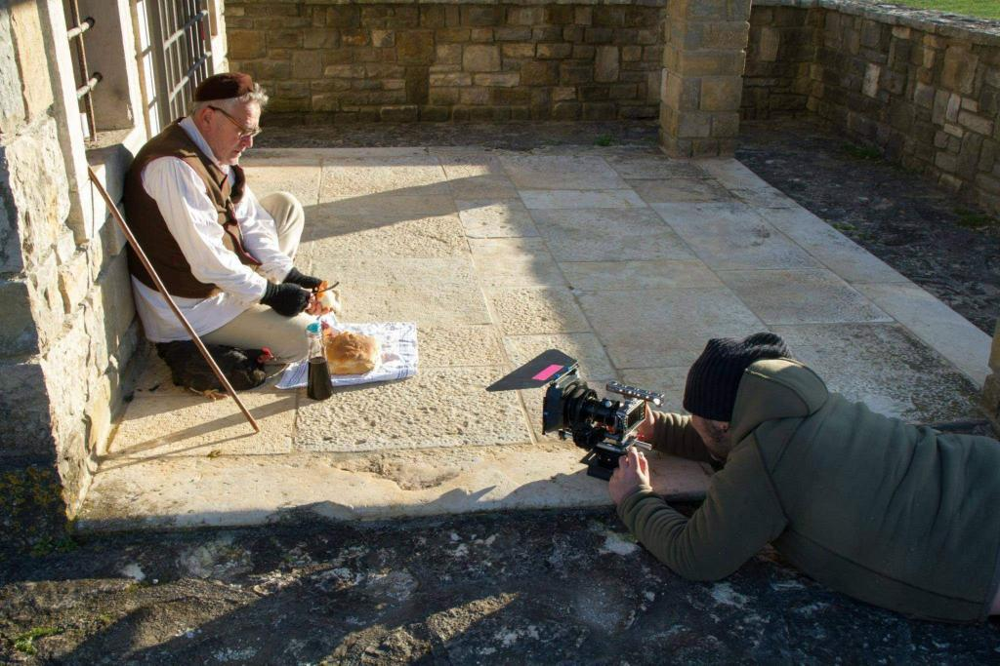
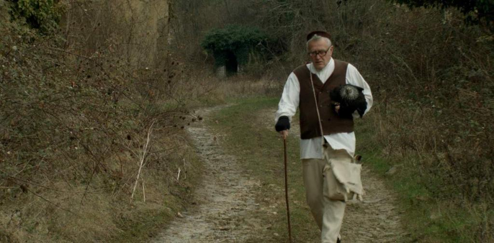
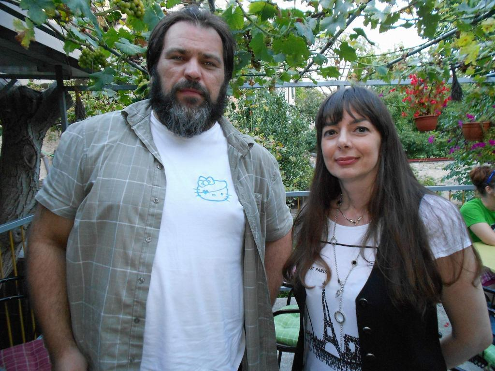

"Po noće nastane jedan novi sviet, sve je škuro, sve je drugajče, okolo gredo štrigi, mraki, svieći, vukodlaki…" - ovim riječima, uz prikladnu napetu glazbenu podlogu, kroz kadrove u kojima se izmjenjuju prizori seoske crkvene arhitekture i podnevnog istarskog pejzaža, započinje dvoipolminutni "teaser" budućeg filma neobičnog naslova - "Je letrika ubila štrige". Pod istim se naslovom na tematskoj Facebook stranici može pratiti i postupno nastajanje ovog filma, koji već svojim naslovom i spomenutim foršpanom dostupnim na Youtubeu budi zanimanje. Mnogi su se, naime, u književnosti, publicistici, kazalištu ili kreativnim radionicama s djecom posljednjih desetljeća bavili istarskim predajama o štrigama i drugim nadnaravnim bićima, ali još nitko, ili odavno nitko, u nekoj logičnoj cjelovitosti i sveobuhvatnosti. Hoće li ovaj film donijeti nešto novo?

Autori ovog filma, Viviana Brkarić iz Šušnjevice i Cristian Kolacio iz Tara, daju naslutiti da hoće, jer pod punim naslovom "(Ne)skrivena Istra - Je letrika ubila štrige" ne krije se samo budući dugometražni igrano-dokumentarni film već mnogo opsežniji projekt, i to "projekt" u današnjem suvremenom značenju te riječi, kojeg zasad podržavaju Ministarstvo kulture Republike Hrvatske, Istarska županija, općine Kršan, Pićan i Žminj, gradovi Buzet, Rovinj i Labina, a među sponzorima iz svijeta gospodarstva je i TE Plomin. Autori očekuju da će projekt podržati i ostali gradovi i općine s čijeg područja dolaze kazivači i priče, a nadaju se i sponzorstvima još ponekih privrednih subjekata. Naslov filma naravno asocira na neminovnu činjenicu da se u današnje vrijeme televizije, kompjutera i elektronskih medija sve manje pričaju štorije, pa i fantastična bića iz tih priča nestaju iz obzora znanja današnjih Istrana, pogotovo mladih.
Štrige na vlaškom i istriotskom
"Projekt smo pokrenuli 2014. godine sa željom da u njemu objedinimo filmsku umjetnost te istarsku usmenu tradiciju pripovijedanja s naglaskom na pripovijetke o fantastičnim bićima poput štriga, štriguna, mora, štroliga, krsnika, vila, vukodlaka, te priče o zakopanom blagu, ispričane na autentičnim istarskim jezicima i dijalektima", kaže Viviana Brkarić, inače predsjednica udruge "Spod Učke" koja je formalni nositelj ovog projekta. Osim filma, koji će kao autorski uradak ovjekovječiti dio istarske usmene baštine i njene igrane interpretacije, ovaj projekt s obzirom na širok krug suradnika i sudionika, pogotovo među djecom, za cilj ima i razvijanje te njegovanje interesa za kulturno nasljeđe, poglavito za usmenu predaju, kao i uključivanje najmlađih u otkrivanje, evaluaciju i njegovanje nematerijalne kulture Istre, koju uz ostalo čine brojne legende, priče i vjerovanja u nadnaravna bića i pojave. Međutim, osim tog aspekta usmene književnosti, i filmu i cijelome projektu važan će naglasak biti i lingvistička posebnost Istre odnosno raznovrsnost jezika koji se govore u Istri.

Priče o fantastičnim bićima u Istri imaju bogatu tradiciju, a pričaju se još i danas. Viviana Brkarić smatra da je u vrijeme globalizacije vrlo važno sačuvati kako samu tradiciju pripovijedanja, tako i dokumentirati i sačuvati audio i videozapise priča ispričanih na autentičnom jeziku pripovjedača. "Upravo je to namjera ovog projekta", kaže ona, "da se sakupi što više priča ispričanih na izvornim jezicima i dijalektima Istre, pošto su neki jezici visoko ugroženi zbog sve manjeg broja govornika do čega je došlo zbog prekida prirodnog prijenosa jezika s roditelja na djecu te sve većeg iseljavanja iz područja gdje se ti jezici govore".

Činjenica jest da Istra ima dva jezika koji spadaju u visokougrožene jezike: to su vlaški i žejanski (odnosno istrorumunjski) jezik, te istrioto (odnosno istriotski). Oba se nalaze na UNESCO-voj Crvenoj listi ugroženih jezika svijeta, a registrirani su i kao nematerijalna kulturna baština Republike Hrvatske. U filmu, i dokumentaciji koja će kroz njegovu pripremu nastajati, kazivači će govoriti priče na ta dva jezika, ali i na nizu lokalnih govora i dijalekata. Zasad je u filmu izvjesno pojavljivanje žminjskog, buzetskog, kršanskog, plominskog, labinjanskog i opatijskog od čakavskih govora, zatim istro-venetskog jezika, te perojskog i slovenskog. Namjera je autora obuhvatiti cijeli istarski poluotok, odnosno snimat će se kazivači ne samo iz Istarske županije, već i iz Primorsko-goranske županije te iz slovenskog i talijanskog dijela Istre. Ukupno je planirano dvadeset i pet kazivača iz svih dijelova Istre, a zanimljivo je da neki od njih te priče ne interpretiraju samo kao "štorije" iz davnina, nego kao istinite doživljaje njihovih bližnjih, ili čak kao vlastite doživljaje iz prve ruke.
Glazbene podloge Noela Šurana
Uz priče o fantastičnim bićima Istre koje će kazivači govoriti na svojim jezicima i govorima, u filmu će se prikazati i bogato kulturno nasljeđe Istre, raznolikost i ljepota njenih krajolika, mnoga njena još "neotkrivena" područja, čime će se gledatelje budućeg filma, poručuju autori, "na dinamičan način provesti kroz multikulturalnost, mističnost te raznolikost krajolika Istre".

Snimanje filma na terenu prate i filmske radionice za djecu, kojima se djeci želi prenijeti znanja o osnovama filmskog jezika, snimanja i montaže, a očekuje se da će polaznici tih radionica u nastavku projekta snimati i vlastite kratke filmove na temu istarskih tradicijskih priča s ciljem da ih se zabilježi što više.
Scenarij filma "Je letrika ubila štrige?" zajednički potpisuju Viviana Brkarić i Cristian Kolacio, a Kolacio je i redatelj filma, dok autorsku glazbu potpisuje Noel Šuran, u svom prepoznatljivom eksperimentalnom propitivanju tradicijske glazbe suvremenim tehnikama. Zvučna kulisa filma ilustrira prožimanje tradicije i suvremenog gledanja na mitove i vjerovanja, što će također biti naglašeno hibridnom formom samoga filma odnosno izmjenjivanjem dokumentarnih kadrova s kazivačima, i igranih scena u kojima glumci amateri iz lokalnih istarskih glumačkih skupina rekonstruiraju priče kazivača.

Cijeli projekt "(Ne)skrivena Istra - Je letrika ubila štrige" ostvaruje se i kroz usku suradnju s Centrom za nematerijalnu kulturu Istre (CENKI) u Pićnu, gdje će naposljetku biti pohranjena i sva etnografska građa koja će se za potrebe filma prikupiti kroz terenski rad.
Davor Šišović
April 5, 2015
© 2015 Glas Istre